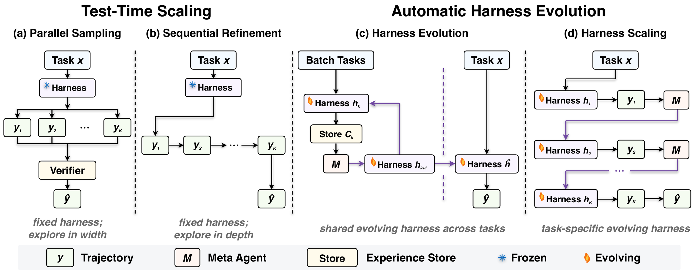

01研究背景与问题定义
当一个智能体反复运行同一批任务、查看失败日志，再修改提示、工具或控制代码时，最终分数上升有两种不同来源：它可能找到可复用的运行机制，也可能只是获得了更多尝试与挑选答案的机会。两种收益都可能实用，但只有前者能支持“发现了更好的通用 Harness”。把进化后的单次分数与最初一次运行比较，无法区分二者。
论文的研究对象是评测协议。它要求把反馈、推理预算和数据划分同时显式化：增加预算时，既允许修改 Harness，也允许固定 Harness 多采样或改写解题轨迹；检验可复用性时，则必须冻结发现的产物，再在搜索未见的任务上运行。这里的核心创新是把“系统设计收益”变成需要额外证明的假设。
| 观察 | 仍然可能的解释 | 必须增加的控制 |
|---|---|---|
| 同一题多轮之后成功 | 多次尝试扩大了命中机会 | 固定 Harness 的同预算采样 |
| 使用单元测试后分数上升 | 正确性反馈帮助筛选候选 | 对齐测试可见性与选择权限 |
| 搜索集上单次表现变好 | 适配了搜索任务的局部规律 | 训练、验证、测试任务分离 |
02方法与技术路线
评估把执行模型固定，将“预算花在哪里”作为变化因素；公共初始 Harness 保持一致。方法之间允许的最终选择规则随单测权限改变，因此不能跨反馈条件直接比较数字。
任务层预算
独立采样多条轨迹，或读取前一轮经验继续修正；Harness 保持固定。
Harness 层预算
元智能体读取代码、轨迹与可用反馈，修改共享或单任务 Harness，再运行任务。
同集效用与留出迁移分开测量
同集结果检验预算用途；45 / 10 / 34 个训练、验证、测试任务检验冻结 Harness 的迁移。
预算匹配控制了什么
并行采样把预算用于互相独立的尝试；没有单测时，由同一模型自评挑选最终轨迹。顺序修正则把前次轨迹的摘要交给下一次执行，没有单测时返回最后一次结果。两种方式都不改变 Harness，却可直接从额外推理中受益，因此构成进化方法必须超越的实证对照。
统一的 K 是 rollout 级预算，并不意味着所有方法的实际 token、元分析调用和延迟完全相同。它消除了最明显的尝试次数差异，但仍需区分“同轮数有效性”与严格的等成本优越性。
共享进化与单任务进化的不同产物
Harness Evolution 每轮在一批任务上运行当前代码，把代码、轨迹和可用结果保存在经验库，元智能体据此生成下一版本。有单测时选平均结果最好的版本；没有时使用最后版本。执行模型不更新，产物是外部程序。本文采用 AHE 实现，并关闭外部 Harness 检索，以免把现成任务知识带入比较。
Harness Scaling 则只为当前任务修改代码。它能更直接利用该题反馈，但产物的作用域也是当前实例。把这一条件加入实验，是为了判断问题究竟出在“修改 Harness”本身，还是跨任务共享修改难以同时满足异质需求。
正确性权限决定了输出选择
单测可用时，测试结果既能指导下一轮，也能从候选中识别成功解。这种近似 oracle 的选择与无单测自评不是同一种能力。pass@5 反映五次机会中是否出现成功轨迹；冻结 Harness 的单次执行能力则更接近 pass@1。两个指标必须同时看，才能避免把候选覆盖率误写成单次策略改善。
论文原始结构图 · 点击对照

03实验设计与结果分析
同一预算下，修改 Harness 是否比多尝试更有效
| 条件 | 初始单次 | 并行采样 | 共享 Harness 进化 |
|---|---|---|---|
| 无单测；三模型平均 | 68.2 | 72.3 | 67.4 |
| 有单测；两模型平均 | 72.9 | 86.0 | 75.8 |
无单测时，共享进化甚至低于初始单次，而并行采样在三种模型上均改善。GPT-5.4 的共享进化从 75.3 降至 69.7，提示自生成诊断可能把局部误判写入以后所有任务共用的程序；这比“没有找到更优版本”更严重。
有单测时，各方法都更容易获益，但共享进化仍落后于直接采样。顺序修正平均 pass@5 达到 91.8，共享进化为 86.2：可靠反馈的价值很大，却没有自动转化成对 Harness 搜索的特殊支持。两个条件的模型集合不同，不能拿两行差值估计单测本身的净效应。
冻结产物之后，收益还能迁移吗
| 模型 | 初始 Harness | 进化 Harness |
|---|---|---|
| Claude Opus 4.6 | 63.3 | 64.5 |
| GPT-5.4 | 72.1 | 72.1 |
| 平均 | 67.7 | 68.3 |
留出平均只提高 0.6 个百分点，削弱了“同集收益代表可迁移设计知识”的解释。测试集只有 34 题、两次独立运行，宜把结果理解为当前设置下迁移证据薄弱，而不是证明所有自动 Harness 设计均不可能泛化。
04贡献、局限与综合评价
最重要的贡献是提高证明标准
论文把三个不同问题拆开了：额外计算能否改善结果，外部程序修改是不是更有效的预算用途，以及修改能否复用。这样的拆分即使未来模型或进化器更换仍然成立。负面结果的价值在于为正面声明规定对照，而不只是给某个实现排一次名次。
反馈权限还改变了问题本身
有单测时，候选成功可以被外部识别；没有单测时，系统必须先判断自己的解是否可信。两个条件分别检验受验证搜索和自我校正，失败原因并不相同。共享 Harness 在无反馈时下降，可能既含错误修改，也含最终版本选择不可靠。可固定同一批已生成版本，分别用自评、独立验证集和 oracle 选择后再测留出结果；这能区分搜索器没有产生好版本，还是选择器没认出它。现有结果对整个流程的批评成立，但不能把每次失败都归因于元智能体不会设计。
当前证据反驳的是强结论，不是整个方向
实验集中于 Terminal-Bench 与特定初始 Harness，且采用有限搜索轮数。成熟起点可能已经消除了最容易改善的系统缺陷，剩下的错误更适合增加解题尝试。相反，一个初始接口明显失配的任务域可能留有更大的结构收益。因此，论文有力质疑“同集进化增益即可证明通用设计改善”，却不足以推断所有任务都应优先采样。
可区分的下一步判断
更有辨别力的实验应在多种初始 Harness 质量上，按实际元分析、执行与 token 成本对齐预算，再冻结修改并迁移到不同任务族。如果进化只在较弱起点有效，它主要承担接口修复；若在强起点上仍能跨域复用，才更接近发现一般控制规律。现有证据支持谨慎使用自动搜索，同时把产物迁移和收益摊销列为核心评测对象。